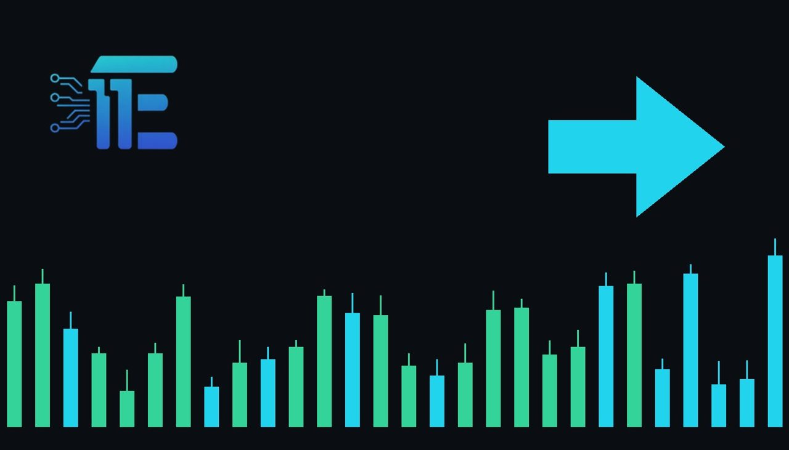

RBC Flags Margin Squeeze for Gold Shares Ahead of ResultsRBC បារម្ភពីសម្ពាធប្រាក់ចំណេញរបស់ក្រុមហ៊ុនរុករករ៉ែមាសមុនពេលចេញផ្សាយរបាយការណ៍
XAU/USD impact: ◆ Mixedផលប៉ះពាល់លើ XAU/USD: ◆ ចម្រុះ

Gold-mining shares face a mixed third-quarter reporting season as lower bullion prices and elevated operating costs squeeze margins. This sector margin pressure highlights the fundamental challenges facing producers amid volatile bullion valuations.
ភាគហ៊ុនរុករករ៉ែមាសប្រឈមមុខនឹងរដូវកាលរបាយការណ៍ត្រីមាសទី៣បែបចម្រុះ ដោយសារតម្លៃមាសទាប និងចំណាយប្រតិបត្តិការខ្ពស់កាត់បន្ថយប្រាក់ចំណេញ។ សម្ពាធលើប្រាក់ចំណេញនេះបង្ហាញពីបញ្ហាប្រឈមជាមូលដ្ឋានសម្រាប់អ្នកផលិតចំពេលទីផ្សារមាសមានភាពប្រែប្រួល។
Gold-mining shares face a mixed third-quarter reporting season as lower bullion prices and elevated operating costs squeeze margins, according to RBC Capital Markets. Investors are actively looking for evidence that producers can successfully deliver planned production increases in the second half of 2026.
ភាគហ៊ុនរុករករ៉ែមាសប្រឈមមុខនឹងរដូវកាលរបាយការណ៍ត្រីមាសទី៣បែបចម្រុះ ដោយសារតម្លៃមាសទាប និងចំណាយប្រតិបត្តិការខ្ពស់កាត់បន្ថយប្រាក់ចំណេញ យោងតាមការឱ្យដឹងពី RBC Capital Markets។ អ្នកជួញដូរនិងវិនិយោគិនកំពុងតាមដានយ៉ាងយកចិត្តទុកដាក់ដើម្បីរកមើលភស្តុតាងថាតើក្រុមហ៊ុនផលិតអាចសម្រេចបានតាមផែនការបង្កើនការផលិតក្នុងពាក់កណ្តាលទីពីរនៃឆ្នាំ២០២៦ ឬយ៉ាងណា។
The transmission channel to XAU/USD operates primarily through producer sentiment and broader equity market valuations linked to the precious metals sector. When mining companies experience margin compression from elevated operating costs and fluctuating bullion prices, it can influence capital flows across the broader market and affect sentiment toward the underlying asset.
ច្រកបញ្ជូនទៅកាន់ XAU/USD គឺតាមរយៈអារម្មណ៍របស់ម្ចាស់អាជីវកម្មរុករករ៉ែ និងតម្លៃទីផ្សារភាគហ៊ុនទូទៅដែលទាក់ទងនឹងវិស័យលោហធាតុមានតម្លៃ។ នៅពេលដែលក្រុមហ៊ុនរុករករ៉ែជួបប្រទះនឹងការធ្លាក់ចុះប្រាក់ចំណេញពីការចំណាយប្រតិបត្តិការខ្ពស់ និងការប្រែប្រួលតម្លៃមាស វាអាចមានឥទ្ធិពលលើលំហូរទុនក្នុងទីផ្សារ និងប៉ះពាល់ដល់អារម្មណ៍អ្នកជួញដូរលើទ្រព្យសកម្មមូលដ្ឋាន។
A supportive environment for XAU/USD typically emerges if rising operating pressures restrict future supply expansion, reinforcing scarcity value and attracting safe-haven capital. Conversely, if margin squeezes prompt broader equity liquidations or signal weak underlying industrial demand, it can pressure the broader metals complex and weigh on XAU/USD valuations.
បរិយាកាសគាំទ្រសម្រាប់ XAU/USD ជាទូទៅកើតឡើងប្រសិនបើសម្ពាធប្រតិបត្តិការកើនឡើងកំណត់ការពង្រីកការផ្គត់ផ្គង់នាពេលអនាគត ដែលជួយពង្រឹងតម្លៃកម្រ និងទាក់ទាញទុនសុវត្ថិភាព។ ផ្ទុយទៅវិញ ប្រសិនបើសម្ពាធប្រាក់ចំណេញជំរុញឱ្យមានការលក់ចេញភាគហ៊ុន ឬបង្ហាញពីតម្រូវការឧស្សាហកម្មខ្សោយ វាអាចដាក់សម្ពាធលើទីផ្សារលោហធាតុទូទៅ និងតម្លៃ XAU/USD។
Traders should monitor upcoming corporate earnings reports, sector-wide production updates, and broader macroeconomic indicators influencing input costs and operating margins across major mining firms.
អ្នកជួញដូរគួរតែតាមដានរបាយការណ៍ប្រាក់ចំណេញរបស់ក្រុមហ៊ុនដែលនឹងមកដល់ ព័ត៌មានអាប់ដេតពីការផលិត និងសូចនាករម៉ាក្រូសេដ្ឋកិច្ចទូទៅដែលជះឥទ្ធិពលដល់ការចំណាយ និងប្រាក់ចំណេញរបស់ក្រុមហ៊ុនរុករករ៉ែធំៗ។
Key takeawaysចំណុចសំខាន់ៗ
- RBC Capital Markets highlighted margin pressure for gold-mining shares due to lower bullion prices and elevated operating costs.
- RBC Capital Markets បានគូសបញ្ជាក់ពីសម្ពាធលើប្រាក់ចំណេញរបស់ភាគហ៊ុនរុករករ៉ែមាសដោយសារតម្លៃមាសទាប និងចំណាយខ្ពស់។
- Investors are closely watching whether major producers can meet their planned production increases for the second half of 2026.
- វិនិយោគិនកំពុងតាមដានយ៉ាងដិតដល់ថាតើក្រុមហ៊ុនផលិតធំៗអាចសម្រេចបានគោលដៅបង្កើនការផលិតសម្រាប់ពាក់កណ្តាលទីពីរនៃឆ្នាំ២០២៦ ដែរឬទេ។
- Sector developments and operating margins influence overall market sentiment and capital allocation toward precious metals.
- ការវិវត្តនៅក្នុងវិស័យរុករករ៉ែ និងប្រាក់ចំណេញមានឥទ្ធិពលលើអារម្មណ៍ទីផ្សារទូទៅ និងការបែងចែកទុនទៅលើលោហធាតុមានតម្លៃ។
Original commentary by THE MARKET CODE, based on public reporting from Yahoo! Finance: GC=F News. Written with the help of AI. Educational only, not financial advice.
មតិវិភាគដើមដោយ THE MARKET CODE ផ្អែកលើការរាយការណ៍សាធារណៈពី Yahoo! Finance: GC=F News។ សរសេរដោយមានជំនួយពី AI។ មាតិកាអប់រំប៉ុណ្ណោះ មិនមែនជាដំបូន្មានហិរញ្ញវត្ថុទេ។